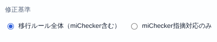
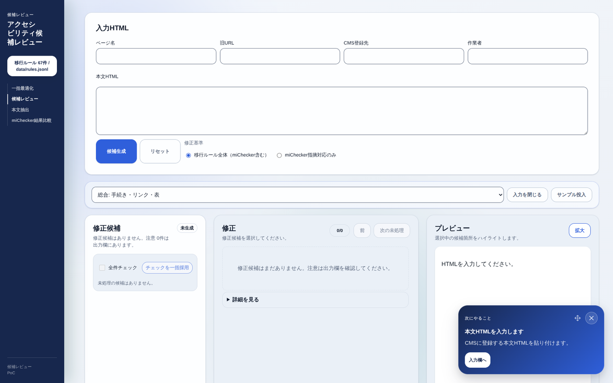
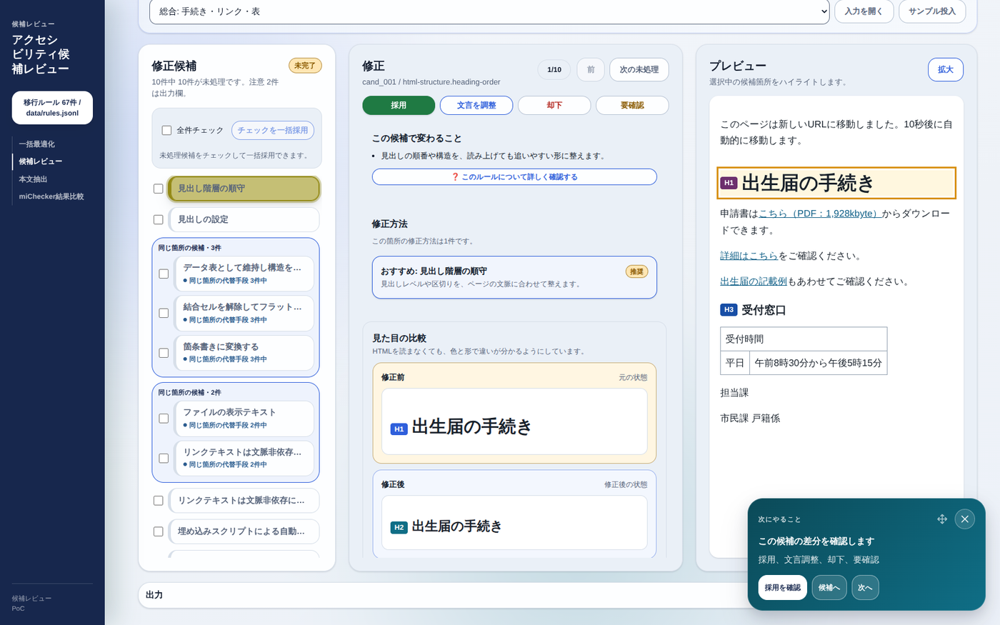
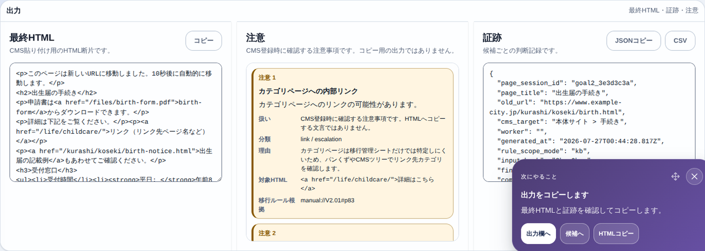
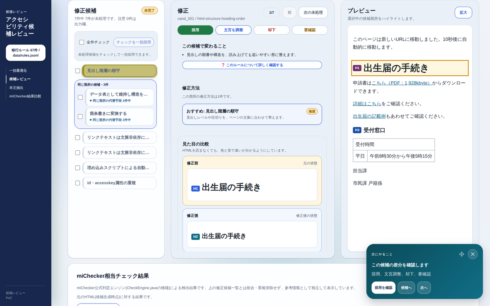
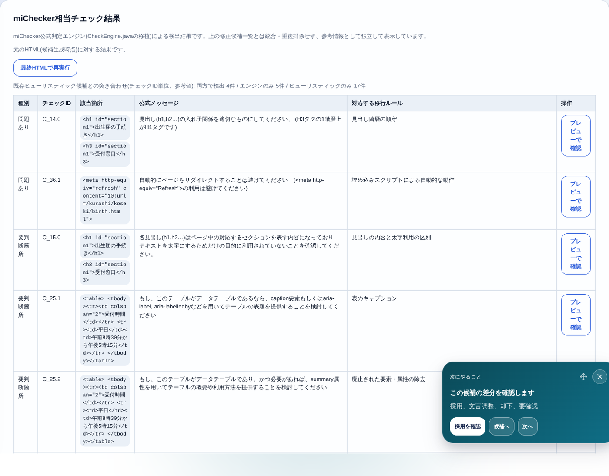
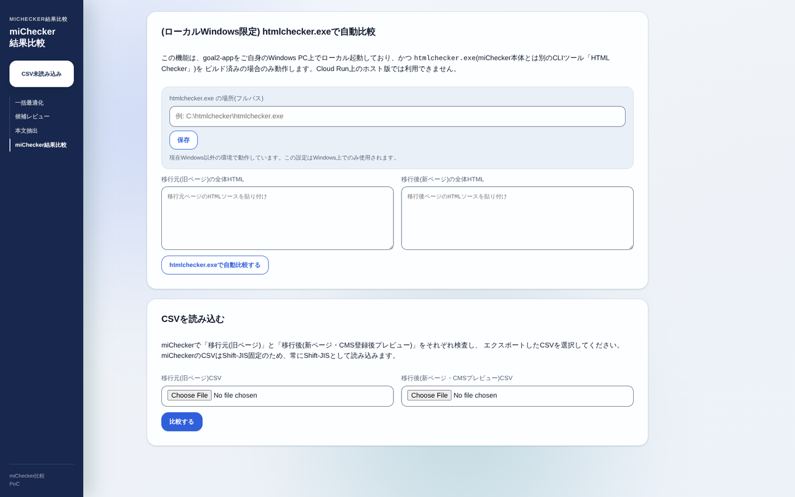
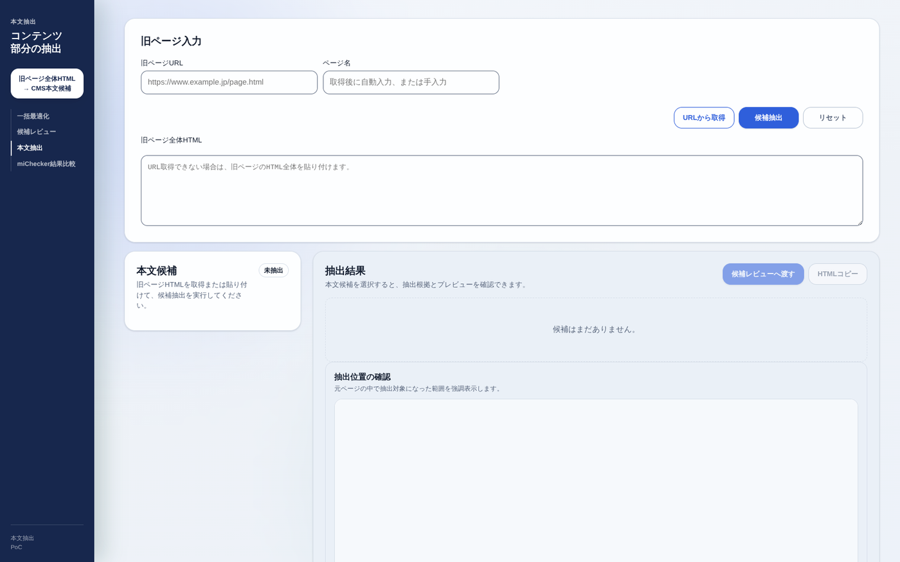

検証の目的と全体像
本検証では、まったく同じ移行対象ページを3つの方式で処理し、それぞれの所要時間と成果物の品質を記録して比較します。ねらいは、従来の「全ページ手動確認」に対して、AI支援を加えた方式がどれだけ効率と品質に寄与するかを、数字で確かめることです。
3つの方式
| 方式 | やること | 使うツール／設定 | |
|---|---|---|---|
| 通常移行 | これまでの移行作業をそのまま実施する。本手順書での操作追加はなし。 | 候補レビュー 不使用 | |
| AI移行 | 「アクセシビリティ候補レビュー」でアクセシブルなHTMLへ変換してから移行する。 | 修正基準 = 移行ルール全体 | |
| miChecker移行 | 「アクセシビリティ候補レビュー」のmiChecker版を使い、miCheckerが指摘する箇所のみを対応して移行する。 | 修正基準 = miChecker指摘対応のみ |
① 作業の所要時間（フェーズごと）、② 成果物の品質（アクセシビリティ上の検出漏れ・誤り、miChecker指摘の残存数）。詳しい記録項目は 8. 計測・記録項目 にまとめています。
作業の全体フロー（方式2・3共通）
方式1（通常移行） は従来どおりの手順のため、本書では割愛します（時間の計測のみ行ってください）。方式2 と 方式3 は、次の流れで進めます。
- STEP 1（CMS解析）: CMSの取込ツールで、ヘッダー・ナビ・フッターなどを除いた本文（コンテンツ）部分のみのソースコードを生成します。
- STEP 2〜3（このアプリの作業）: 出力されたソースコードを「アクセシビリティ候補レビュー」に入力し、修正候補を判断して最適化された最終HTMLを取得します。
- STEP 4〜5（CMS側の作業）: 最適化後のソースコードをCMSの取込ツールへ戻し、CMSで取り込んだうえで、移行に必要な残りの作業を実施します。
取込ツールでの本文抽出が難しい場合は、本アプリの 本文抽出画面 で旧ページから本文候補を切り出し、そのまま候補レビューへ引き継ぐこともできます。
事前準備と共通ルール
アクセス確認
- 実行URL
https://goal2-a11y-review-700549743482.asia-northeast1.run.app/を、モダンブラウザ（Chrome / Edge など）で開けることを確認します。 - 画面は横幅の広い表示（PCの全画面）を推奨します。候補一覧・詳細・プレビューの3列が並ぶため、狭い画面では見づらくなります。
役割
- オペレーター（作業者）: 実際に移行作業を行い、所要時間を記録する人。
- 評価担当: 完成したページの品質（アクセシビリティ）を採点する人。
同じオペレーターが同一ページを複数の方式で続けて作業すると、2回目以降は内容を覚えてしまい、時間が実際より短く出ます。方式ごとに担当を分ける、または対象ページを分ける運用にしてください（割り当ては検証責任者の指示に従います）。
実施体制と事前に用意するもの
作業を始める前に、次の3点を検証責任者・戦略G・BPO側でそろえておきます。ここが整っていないと、方式ごとの時間が正しく比較できません。
| 用意するもの | 担当 | 内容 |
|---|---|---|
| オペレーターの3グループ分け | BPO | 方式1・方式2・方式3を別々のグループが担当します。同じ人が同じページを続けて作業すると内容を覚えてしまい、2回目以降の時間が短く出るためです。 |
| CMS側の3系統の準備 | 戦略G | 通常取込（方式1用）、解析まで①（AI移行用）、解析まで②（miChecker移行用）を、あらかじめCMS上に用意しておきます。 |
| 記録用スプレッドシート | 検証責任者 | 時間と品質を記録する共有シート。列は 8. 計測・記録項目 の表に合わせて作ります。作業中はこのシートに直接記入します。 |
対象ページ数の考え方
- ページ数はスケジュールと進捗に応じて適宜判断します。最初から全量を固定しません。
- 規模の上限の目安は 1自治体あたり50ページ × 5自治体 = 250ページ です。
- 同じページを3方式で処理するのが原則です。対象ページは検証責任者が指定します。
データの取り扱い
- 本アプリの候補生成は、既定では外部AI（LLM）を呼び出しません。ルールによる自動判定だけで動作します。実案件データを外部AIへ送信してよいかは別途の合意事項のため、有効化は運用判断に委ねられます。
- 画面の「サンプル投入」は練習用のダミーデータです。本番の移行作業には使わないでください。
時間計測の定義
各方式で、少なくとも次の3フェーズの時間を分けて記録すると比較しやすくなります。「開始／終了」の合図は検証チームで統一してください。
| フェーズ | 開始 | 終了 |
|---|---|---|
| ① CMS解析 | 本文抽出を始めた時点 | 本文ソースが用意できた時点 |
| ② 候補レビュー | 候補レビューに入力した時点 | 最終HTMLをコピーした時点 |
| ③ CMS取込・移行 | 取込ツールへ戻した時点 | 移行作業が完了した時点 |
※ 方式1（通常移行）は①〜③をフェーズ分けせず、全体の所要時間だけでも構いません（従来手順に合わせてください）。
方式1: 通常移行
手順は従来どおりのため、本書では割愛します。作業では次の点だけ守ってください。
- いつもの移行手順で作業を進めます（ツールの追加操作なし）。
- 所要時間を記録します（開始・終了時刻）。
- 完成したページは、方式2・3と同じ基準で品質評価にかけます（8章）。
対象ページ・担当者・開始／終了時刻・所要時間。これが他方式との比較の基準値になります。
方式2: AI移行（詳細手順）
-
画面を開き、修正基準を「移行ルール全体」にする
実行URLを開くと入力画面が表示されます。入力欄の下にある「修正基準」で、「移行ルール全体（miChecker含む）」が選ばれていることを確認します（既定でこちらです）。

図 5-1修正基準の切り替え。方式2では「移行ルール全体」を選ぶ。 -
ページ情報と本文HTMLを入力する
上部の欄にページ名 / 旧URL / CMS登録先 / 作業者を入力し、「本文HTML」欄に、STEP 1（CMS解析）で抽出した本文のソースコードを貼り付けます。

図 5-2入力画面。ページ情報を入れ、本文HTMLを貼り付ける。 -
「候補生成」を押す
「候補生成」ボタンを押すと、画像の代替テキスト・見出し・リンク文言・表の構造などについて、修正候補が自動生成されます。「AIで確認中」という半透明の表示が出た場合は、表示が消えるまで待ってください。
-
候補を1件ずつ確認して判断する（メイン作業）
左に修正候補の一覧、中央に詳細、右にプレビューが表示されます。一覧のカードをクリックすると、その候補の「変わること」「修正前後の見た目の比較」が確認できます。

図 5-3候補レビューの全体。左=候補一覧／中央=詳細／右=プレビュー。 候補を選ぶと、中央に判断ボタン（採用 / 文言を調整 / 却下 / 要確認）と、修正前・修正後の見た目の比較が並びます。HTMLを読めなくても、見た目の比較で違いが分かります。
図 5-4候補の詳細と4つの判断ボタン。プレビューは該当箇所をハイライトする。 4つの判断ボタン
ボタン 意味 採用 提示された修正をそのまま採用する。 文言を調整 文言やリンク先などを自分で直してから採用する。見出しでは「見出しレベル」も選び直せる。 却下 この修正は不要と判断する（理由を残せる）。 要確認 自分では判断できない・上長やSVの確認が必要。迷ったらこれ。 AIの提案は必ず人が確認する「（AI判定）」「（AI提案）」の注記が付いた候補は、内容が実態に合っているかを必ず人が確認してから採用してください。確度が低い・内容に疑問があるものは「要確認」にします。画像の代替テキスト候補は、青枠の「AI画像名候補」で内容を確認し「修正後HTMLへ投入」してからでないと採用できません。
同じ箇所に複数の直し方があるときとくに表では、修正方法が複数（データ表として整える／複数の表に分割／結合セルを解除／箇条書きに変換 など）並ぶことがあります。「見た目の比較」で切り替えて中身を見比べてから選び、迷えば「要確認」にします。似た候補が多いときは、一覧のチェックボックスで一括採用もできますが、内容確認は省かないでください。
-
すべて判断したら出力する
候補一覧の右上が「完了可」になれば、全候補が判断済みです。画面下部の「出力」を開き、次を確認します。未完了のまま出力しないでください。

図 5-5出力欄。最終HTML／注意／証跡（JSON・CSV）。 - 最終HTML: すべての判断を反映した、CMS貼り付け用のHTML。「コピー」で取得します。
- 注意: HTMLには反映されないが、CMS登録時に人が確認すべき事項の一覧。
- 証跡: 候補ごとの判断記録。「JSONコピー」または「CSV」で保存します（作業記録として必ず保存）。
-
最終HTMLをCMSへ戻して移行する
コピーした最終HTMLをCMSの取込ツールへ戻し、CMSで取り込み後、移行に必要な残り作業を実施します（全体フローの STEP 4〜5）。
フェーズ別の所要時間、候補件数と判断内訳（採用／調整／却下／要確認）、注意の件数、証跡ファイル名。
方式3: miChecker移行 と 同一性検証
基本手順（方式2との違いだけ）
-
修正基準を「miChecker指摘対応のみ」にする
入力画面で、修正基準を「miChecker指摘対応のみ」に切り替えます（図5-1と同じ場所）。あとは方式2と同じく、本文HTMLを入力して「候補生成」します。
-
miChecker指摘に絞られた候補を対応する
候補が、miCheckerが指摘する項目に絞り込まれて表示されます。加えて、画面下部に「miChecker相当チェック結果」パネルが表示され、公式判定エンジン相当の検出結果を参考として確認できます。

図 6-1「miChecker指摘対応のみ」での候補一覧。miCheckerの指摘項目に絞られる。 
図 6-2「miChecker相当チェック結果」パネル。検出項目を表で確認できる。 -
出力してCMSへ戻す
方式2と同じく、判断がすべて済んだら最終HTML・証跡を出力し、CMSの取込ツールへ戻して移行します。
追加で必要な「同一性検証」
方式3は miChecker の指摘に頼るため、「アクセシビリティ候補レビュー」のmiChecker版が、公式のmiCheckerと同じ結果を出せているかを必ず検証します。ずれていると、miCheckerでは指摘されるのに対応漏れが起きる（またはその逆）ためです。
検証には 「miChecker結果比較」画面 を使います。上部メニューの「miChecker結果比較」から開けます。

比較のやり方は2通りあります。
| 方法 | 手順 | 使う場面 |
|---|---|---|
| CSVを読み込んで比較 | 公式miCheckerで出力した結果CSV（移行元・移行後）を読み込み、「比較する」を押して差分を確認する。 | 公式miCheckerの結果CSVが用意できる場合。 |
| htmlchecker.exe で自動比較 | ローカルWindows環境で htmlchecker.exe のパスを設定し、移行元・移行後のHTMLを貼り付けて自動で突き合わせる。 | ローカルWindowsでmiCheckerを直接実行できる場合。 |
ツールの判定と公式miCheckerの判定で一致した項目／食い違った項目を記録します。食い違いがあれば、チェックID・該当箇所・どちらが何を出したかを控えて検証責任者へ報告してください。この一致度が、方式3の結果を信頼してよいかの根拠になります。
補助: 本文抽出画面の使い方
CMS取込ツールでの本文抽出（全体フロー STEP 1）が難しいときは、本アプリの「本文抽出」画面で、旧ページ全体のHTMLから本文（コンテンツ）部分を切り出せます。上部メニューの「本文抽出」から開きます。

- 旧ページのURLを入力して取得するか、旧ページ全体のHTMLを貼り付けます。
- 「候補抽出」を押すと、パンくず・ページトップ・お問い合わせなどのテンプレート部分を除いた本文候補が、確からしい順に表示されます。
- 候補ごとに、本文量・見出し／表／画像の数などの抽出根拠と、元ページ内での位置プレビューを確認できます。
- 「候補レビューへ渡す」で、選んだ本文HTMLをそのまま方式2・3の入力画面へ引き継げます。
認証が必要な旧サイトや社内ネットワーク限定のサイトは、URL取得できません。その場合は全体HTMLを貼り付けて使います。
計測・記録項目
比較の精度は記録の丁寧さで決まります。方式ごと・ページごとに、下の項目をそろえて残してください。
時間・作業量の記録
| 項目 | 方式1 通常 | 方式2 AI | 方式3 miChecker |
|---|---|---|---|
| 対象ページ | |||
| 担当者 | |||
| ① CMS解析（分） | — | ||
| ② 候補レビュー（分） | — | ||
| ③ CMS取込・移行（分） | |||
| 合計所要時間（分） | |||
| 候補件数 | — | ||
| 判断内訳（採用/調整/却下/要確認） | — | ||
| 注意の件数 | — | ||
| 証跡ファイル名 | — |
品質の評価
- 完成した3方式のページを、同じ評価基準・同じ評価担当で採点します（検出漏れ・誤りの数など）。
- miChecker指摘の残存数（対応後に残っている指摘）を、公式miChecker等で確認して記録します。
- 「自然な日本語表現」の妥当性など、ルールの自動判定になじまない観点は人の判断で評価します。
方式2・3では、出力欄の証跡（JSON / CSV）を必ずダウンロードし、対象ページ・方式が分かる名前で保管してください。後からの分析・再現の土台になります。
注意点・よくある質問
| 状況 | 対応 |
|---|---|
| 「AIで確認中」が長い | ページの内容量によっては数十秒かかります。半透明表示が消えるまで待ちます。数分待っても終わらなければ担当者へ連絡します。 |
| AIの提案は信じてよい？ | いいえ。「（AI判定）」等の注記が付いた候補は、内容が実態に合うか必ず人が確認してから採用します。疑問があれば「要確認」。 |
| サンプルのまま作業してしまった | サンプルは練習用ダミーです。本番には使いません。「リセット」で入力欄をクリアしてやり直します。 |
| 候補が1件も出ない | 本文に明らかな問題がなければ0件のこともあります。ただし「注意」欄に確認事項が出る場合があるので、出力欄は必ず確認します。 |
| 出力してよいか分からない | 候補一覧の右上が「完了可」になっているか確認します。未完了のまま出力しないでください。 |
| 迷って手が止まる | 無理に採用・却下せず「要確認」にします。安全側に倒すのが原則です。 |
付録: 用語集・画面一覧
用語集
| 用語 | 意味 |
|---|---|
| 候補（修正候補） | 自動検出されたアクセシビリティ上の問題と、その直し方の提案。 |
| KB（ナレッジベース） | この画面が参照している、アクセシビリティ対応ルールの一覧。 |
| miChecker | 総務省が提供する公的なアクセシビリティ検査ツール。本ツールの判定基準の一部が参考にしている。 |
| WCAG / JIS | アクセシビリティの達成基準（国際基準／日本産業規格）。 |
| 証跡 | 誰が・いつ・どの候補を・どう判断したかの記録。 |
画面一覧（上部メニュー）
| メニュー | 役割 | 本書での参照 |
|---|---|---|
| 候補レビュー | 本文HTMLを入力し、修正候補を判断して最終HTMLを出力する（本検証の中心）。 | §5 / §6 |
| 本文抽出 | 旧ページ全体HTMLから本文（コンテンツ）部分を切り出す。 | §7 |
| miChecker結果比較 | ツールの判定と公式miCheckerの結果を突き合わせる（同一性検証）。 | §6 |
| 一括最適化 | 複数ページをまとめて処理する画面（本検証では未使用）。 | — |